Conheça um pouco mais sobre a localização dos seus amigos
Cada pessoa é um artista livre, chamado a transformar as condições, pensamentos e estruturas que moldam nossas vidas.— Joseph Beuys
A cidade de TripleTen reuniu profissionais de diversos cantos do mundo. Hoje, a Galeria de Arte TripleTen tem o orgulho de apresentar histórias e fotos de algumas das pessoas que dedicam seu tempo e esforço para fazer com que os futuros profissionais de tecnologia desta cidade se sintam em casa. Cada um de nós tem uma história única sobre o lugar de onde viemos. Sinta-se à vontade para adicionar sua própria história e uma obra de arte visual dedicada à sua cidade natal à nossa coleção. Não importa de onde você é, estamos felizes por você ser nosso vizinho.
- 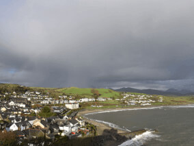
- 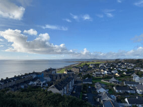
- 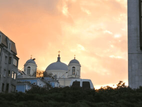
- 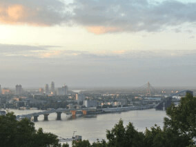
- 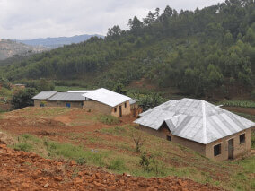
- 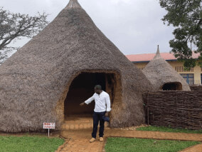
- 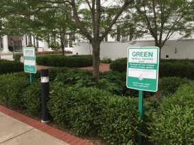
- 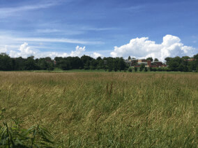
-
Criccieth, País de Gales
ARTISTAS
Steffan Warren, editor-chefe
Kseniya Glagoleva, gerente de projeto
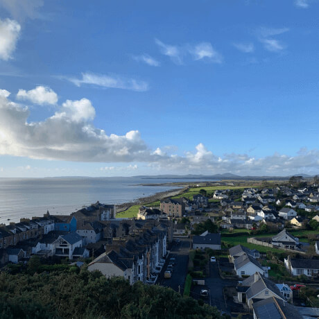 Compre esta obra de arte como NFTA ruína medieval do Castelo de Cricieth tem vista para a cidade abaixo de uma rocha que se projeta para o mar. Acredita-se que tenha sido construído por Llewelyn, o Grande, no século XIII. Cerca de 900 anos depois, a auto-intitulada *Pérola de Gales nas margens de Snowdonia* tornou-se um destino turístico popular durante os meses de verão.
A uma curta caminhada da estrada do castelo, você pode desfrutar do melhor sorvete do mundo no Cadwalader's, cujo ingrediente secreto, segundo rumores, são algas marinhas de origem local. Outra reivindicação à fama é o fato de que Criccieth ganhou o prêmio *Wales in Bloom* por cinco anos consecutivos por suas espetaculares exibições florais pela cidade. Foi também a casa de David Lloyd George, o único galês a ocupar o cargo de primeiro-ministro do Reino Unido.
-
Berea, EUA
ARTISTA
Travis Turner, autor e editor
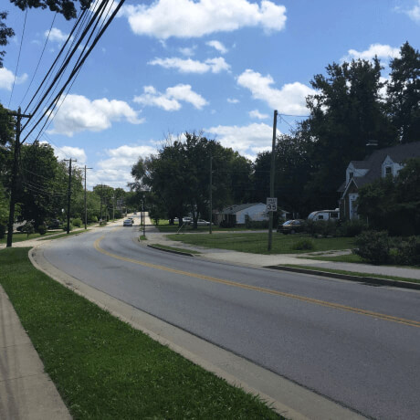 Compre esta obra de arte como NFTBerea é uma pequena cidade localizada na parte central do Kentucky. A cidade é cercada por belas florestas e campos. É conhecida como a capital do artesanato do estado, e os visitantes encontrarão muitas oportunidades de compras: lojas com bijuterias artesanais, velas, artigos de madeira, galerias, ateliês de vidro e muito mais. A cidade realiza um festival anual que celebra o "pão de colher", um prato local feito com pão de milho e servido com uma colher de pau.
No entanto, provavelmente é mais conhecido pela faculdade local. O Berea College foi fundado em 1855 e foi o primeiro colégio no sul a ser racialmente integrado, bem como o primeiro a ser misto. De forma um tanto singular, não cobra mensalidades - todo aluno recebe uma bolsa de estudos integral.
-
Muramvya, Burundi
ARTISTA
Grevisse Kenguruka, editor técnico
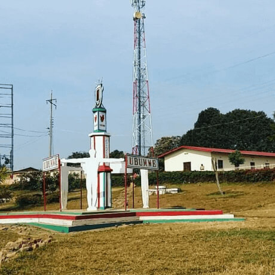 Compre esta obra de arte como NFTMuramvya é uma das 18 províncias de Burundi. Na era do reino, Muramvya era a capital real e em 2007, por causa de sua paisagem cultural e natural, foi adicionada à Lista Provisória do Patrimônio Mundial da UNESCO. Está localizada no centro de Burundi, entre as capitais políticas e econômicas do país.
O clima é bastante frio à noite, mas durante o dia, você pensaria que está no céu. A 2.665 metros (8.743 pés) acima do nível do mar, o Monte Teza é um dos lugares mais frios da província. Mas essa brisa fresca permite uma das maiores plantações de chá e café do país, que representam a maior parte das exportações do Burundi.
O Parque Nacional de Kibira, uma das maiores reservas de vida selvagem para macacos, se sobrepõe a quatro províncias, incluindo Muramvya. Este Parque Nacional encontra-se no ápice das belas montanhas do Congo-Nile Divide, variando entre 1.550 e 2.660 metros de altitude. Está repleta de uma bela vegetação e fonte para os vários rios e riachos que fornecem água em todo o país.
-
Brasília, Brasil
ARTISTA
Sheyla Dias C. da Cunha, administradora
Brasília, capital do Brasil, foi projetada para ser o centro político e administrativo do país. Inaugurado em 21 de abril de 1960, foi construído em tempo recorde, sob a liderança do então presidente Juscelino Kubitschek. Seu planejamento urbano e modernidade foi feito por Lúcio Costa (urbanista) e Oscar Niemeyer ( arquiteto ) .
Brasília é uma cidade única e marcante tanto pelo seu design urbano quanto pela sua importãncia política e cultural, foi inaugurada em 1960 e é reconhecida como Patrimõnio Mundial pela UNESCO.
Brasília é rica em atrações turísticas, com destaque para sua arquitetura icônica, monumentos históricos e belezas naturais. Principais pontos: 1. atrações arquitetônicas e culturais: Congresso Nacional; Catedral Metropolitana Nossa Senhora Aparecida; Palácio do Planalto; Memorial JK; Museu Nacional da Republica; Teatro Nacional Cláudio Santoro. 2. Praças e monumentos históricos: Praça dos Três Poderes; Panteão da Pátria e Os Candangos; Torre de TV; Ponte Juscelino Kubitschek (Ponte JK); Estádio Nacional de Brasília (Mané Garrincha). 3. Natureza e lazer: Lago Paranoá; Parque da Cidade Sarah Kubitschek; Jardim Botânico de Brasília; Parque Nacional de Brasília (Água Mineral). 4. Igrejas e templos: Santuário Dom Bosco; Templo da Boa Vontade. 5. Outros locais interessantes: Espaço Cultural Renato Russo; Complexo Cultural Funarte; Feira da Torre.
 Compre esta obra de arte como NFT
Compre esta obra de arte como NFT